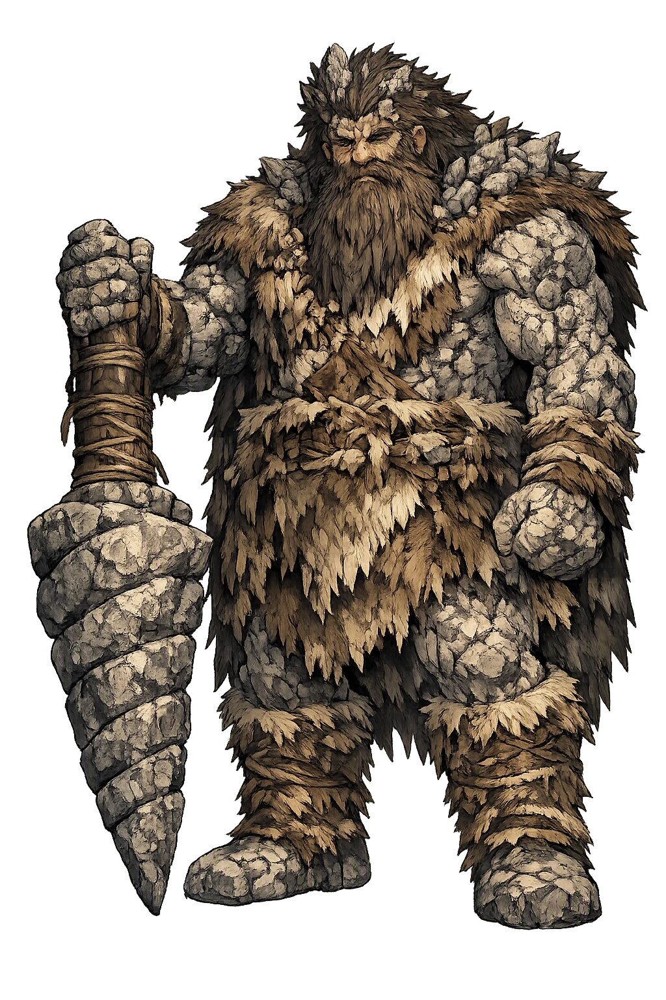
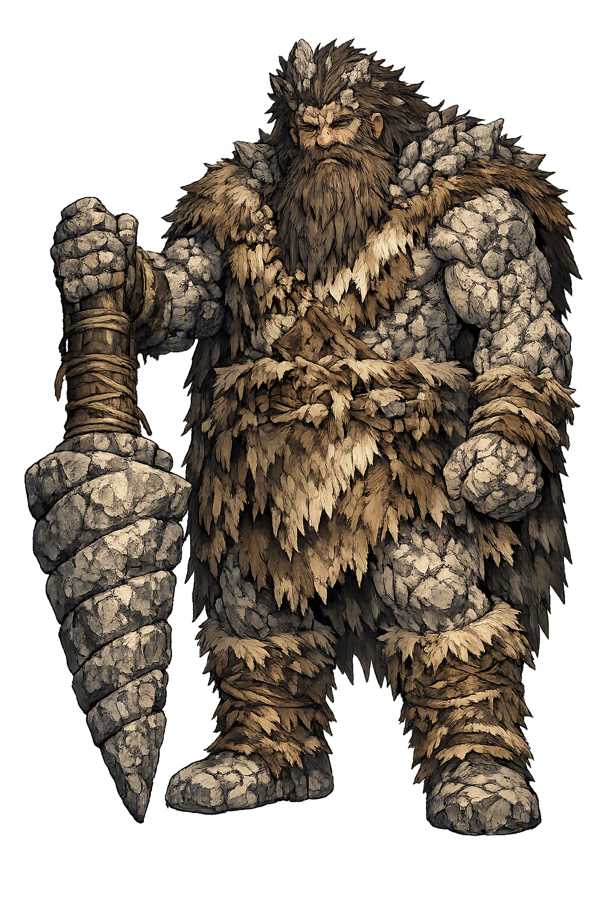

Unicode restoration and ASCII comparison
ᛒᛅᚢᚴᛁ
The name in its original Norse form. Baugi (ᛒᛅᚢᚴᛁ) is attested in the source tradition — “Ring-shaped”. Its original diacritics and script distinctions carry the full phonetic and orthographic weight of the source tradition.
baugi
The plain baugi form is identical to the Unicode restoration. Because this name is already written in Latin letters, no diacritics, stress, or script information were lost — only capitalization differs.
Baugi
The Unicode restoration does not need to recover lost marks for Baugi. Its value is canonical spelling and consistent cataloguing, not the reconstruction of erased orthography. The domain is readable as-is to both DNS and humanity.
Baugi.com → baugi.com
The non-ASCII characters in Baugi are encoded while the ASCII remains visible. To the DNS, it is Punycode. To humanity, it is Baugi.
How Baugi travels from ancient script to the modern URL
Owned, ideal, and ASCII forms of Baugi
Baugi
Restores ᛒᛅᚢᚴᛁ. The full Unicode restoration. baugi.com is not in the PuniCodex collection — it is watched for release; if it drops, this temple upgrades to an owned flagship.
How Baugi was spoken
The Keeper of the Door at Hnitbjǫrg
Baugi is the giant who holds the one door that matters in the story of the mead of poetry: brother to Suttungr, who hoards the mead inside the mountain Hnitbjǫrg, and master of the nine thralls whose deaths open the way to Óðinn's bargain. He is the hinge of the whole theft — the labour-contractor, the reluctant accomplice, and the would-be cheat whose auger-stroke misses a snake by an inch.
The mountain — its name plausibly 'the clashing rocks' — inside which Suttungr shut the mead of poetry, with his daughter Gunnlǫð set to guard it. Baugi's auger makes the only door it ever had.
The auger Óðinn puts in Baugi's hands — 'the traveller', from the verb rata. Baugi bores the tunnel with it, and nearly ends the story with one stroke of it.
The sharpening stone Óðinn tosses among Baugi's nine mowing thralls; in scrambling to claim it they cut each other's throats, and Baugi is left with a harvest and no hands.
Kvasir's blood brewed with honey, held in Óðrœrir, Boðn, and Són — the drink that makes a poet or a sage of whoever tastes it, and the prize the whole bargain is for.
Stories of Baugi
Baugi's entire mythology is one episode, and it is the most consequential single episode in the mythology of poetry: the mead heist of Skáldskaparmál. He appears only there and in the þulur of giant-names — a figure the tradition needed once, at the one door, and never again. But that once is the door through which all skaldic poetry claims to have come.
The story begins before Baugi enters it. From the peace-making of Æsir and Vanir is made Kvasir, wisest of beings; the dwarfs Fjalar and Galar kill him and brew his blood with honey into a mead that makes a poet or a scholar of whoever drinks it, keeping it in three vessels — Óðrœrir, Boðn, and Són. The dwarfs then drown the giant Gilling at sea and kill his wife with a millstone, and Gilling's son Suttungr takes revenge: he sets the dwarfs on a tide-washed skerry, and they buy their lives with the mead. Suttungr carries it home, shuts it inside the mountain Hnitbjǫrg, and sets his daughter Gunnlǫð to guard it.
Only now does Snorri bring Baugi on stage, in a single sentence of genealogy: Suttungr had a brother, and his name was Baugi. The hoard is sealed, the guard is set, and the god who wants the mead does not go to its owner — he goes to the owner's brother.
Óðinn comes walking to Baugi's land calling himself Bǫlverkr, 'Evil-doer' — a name that is not a disguise so much as an announcement. Nine of Baugi's thralls are mowing hay. Bǫlverkr offers to sharpen their scythes, and the whetstone he pulls from his cloak hones so well that all nine want to buy it. He says it will be sold dearly, and throws it up among them; in the scramble to catch it, each thrall swings his scythe at another's neck, and all nine lie dead in the field.
That evening Bǫlverkr lodges with Baugi, and Baugi pours out his troubles: his nine thralls are dead and the hay harvest stands uncut. The god has engineered the vacancy he is about to fill — the labour shortage is the lock, and he made it himself.
Bǫlverkr makes the offer: he will do the work of nine men through the summer, and his wage is one drink of Suttungr's mead. Baugi is careful here, and Snorri gives him the one honest line in the story: he answers that the mead is not his to give — Suttungr alone has control of it — but he will go with Bǫlverkr and they will try together whether they can get it. The bargain is struck: a summer's labour against a hope, with Baugi as broker.
Bǫlverkr does the work of nine all summer. When winter comes they go to Suttungr and Baugi puts the case — and Suttungr refuses flatly: not one drop of the mead. Baugi's brokerage has failed on its stated terms; what remains is the attempt he half-promised, the trying of stratagems.
Bǫlverkr now asks Baugi for other ways in, and produces the auger called Rati. Baugi bores into the mountain, and says the hole is through. Bǫlverkr leans down and blows into the bore — and the stone-chips fly back into his face. He knows then, Snorri says, that Baugi meant to betray him: the hole is blind. Baugi bores again, and this time when Bǫlverkr blows, the chips fly inward and away. The tunnel is through.
Bǫlverkr turns himself into a snake and crawls into the hole — and Baugi strikes after him with the auger, and misses. It is the story's tightest instant: the accomplice becomes the assassin at the threshold, and the mead of all poetry hangs on one failed stroke. Inside waits Gunnlǫð; Óðinn lies with her three nights, wins leave for three draughts, and empties Óðrœrir, Boðn, and Són entire. Then he rises as an eagle with all the mead in him, Suttungr in eagle-shape hard behind, and the Æsir set out their vats in Ásgarðr's court — Baugi's door standing open in the mountain behind them all.
Hávamál lets Óðinn boast of the same theft in his own voice, and the differences are instructive. The god names Rati — 'Rati's mouth I made room for me, and it gnawed the rock' — names Gunnlǫð and the golden seat, names Óðrœrir come up among the Æsir. He names Suttungr defrauded of his mead and Gunnlǫð left weeping, and he names the instrument of it: the baugeiðr, the ring-oath Óðinn swore and broke — 'who can trust him?'
But Hávamál never names Baugi. In the god's own telling, the brother at the door has already vanished — the contract, the auger, the missed stroke, all absorbed into Óðinn's solitary cunning. Snorri's prose preserves what the god's boasting omits: that the door had a keeper, that the keeper had a price, and that the keeper tried, at the last moment, to close it on the snake.
Baugi is the indispensable man nobody remembers. Strip him out and the myth stops cold: without the thralls' deaths there is no vacancy, without the contract there is no access, without the auger in his hand there is no door, and without the door there is no mead — and without the mead, by the tradition's own accounting, there is no poetry at all. Yet he is not a hero of his one story, nor even its villain; he is something rarer in the giant-world of the Eddas, a middleman. He names the limits of his power honestly — the mead is Suttungr's, not mine — and then sells access to what is not his anyway. He helps bore the hole and then tries to kill what crawls through it. The tradition leaves his motives exactly that tangled, and the tangle is the point: every hoard is opened from the inside, by someone whose loyalty is a price rather than a fact. The auger-stroke misses by the width of a snake, and because it misses, poems exist.
Enter Extended Lore